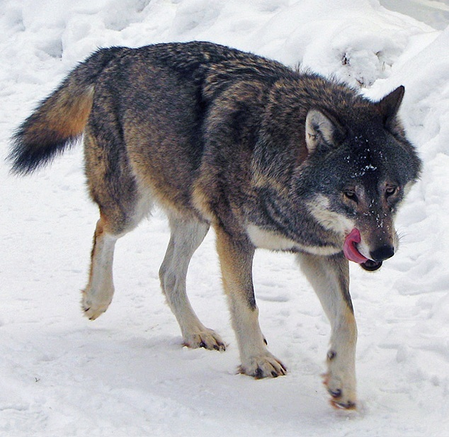

Lobos, são mamíferos carnívoros da família Canidae. Eles são conhecidos por sua inteligência, habilidades de caça e comportamento social complexo. Os lobos vivem em grupos chamados alcateias, que geralmente consistem em um casal reprodutor e seus filhotes. Eles se comunicam através de vocalizações, linguagem corporal e marcação territorial.
Lobos têm uma pelagem densa que varia em cor, incluindo cinza, branco, preto e marrom. Eles possuem dentes afiados e mandíbulas fortes, adaptadas para caçar presas como cervos, alces e pequenos mamíferos. Lobos são animais territoriais e podem percorrer grandes distâncias em busca de alimento.
Lobos enfrentam ameaças significativas devido à perda de habitat, caça e conflitos com humanos. A conservação dos lobos é essencial para manter o equilíbrio ecológico em seus habitats naturais.
Voltar à Homepage